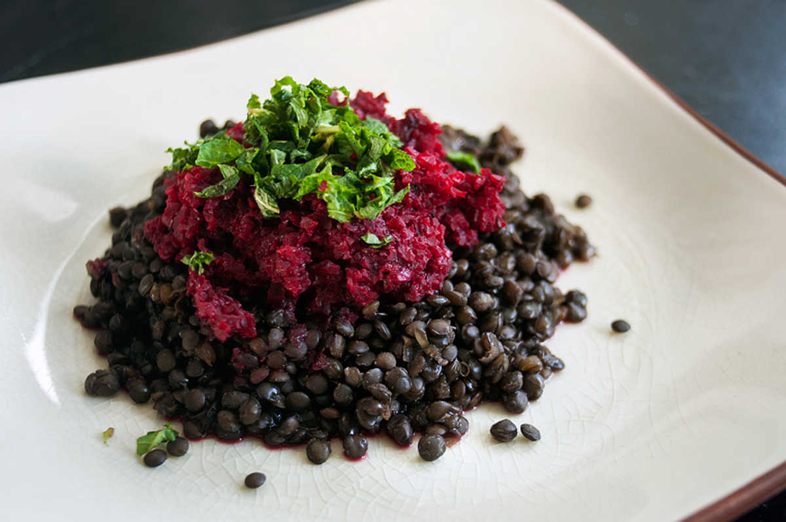

lentils with roasted beet sauce
2 servings — 60 minutes
This recipe is especially good and filling with lentils, but it's also possible to serve it on other grains or even pasta. I used beluga lentils, because they hold their shape better than brown lentils.
Beets make any dish beautiful, but it can stain your skin. Not to worry though - it doesn't stay, you'll just look like you've just killed something.
Fresh peppermint is key in this recipe, don't omit it. If you have a fresh supply at home, that is perfect, otherwise store-bought stalks are fine. You can keep store-bought stalks longer if you do these simple steps: first, tear off any wilted leaves, wash the mint gently, and then put the stalks in a glass with a bit of water and a bag over the top. Then, store it in the refrigerator.
 beluga lentils 1/2 cup
beluga lentils 1/2 cup vegetable bouillon 1 1/3 cup
vegetable bouillon 1 1/3 cup
lentils
- Wash 1/2 cup of beluga lentils. Put 1 1/3 cup of vegetable bouillon in a pot, add the lentils, and bring to a boil.
- Reduce heat to medium and simmer for 25 minutes. Don't let them cook for too long or they'll get too mushy. If the lentils seem cooked but haven't absorbed all of the water, strain it out.
 red beets 3
red beets 3 olive oil 2 tsp
olive oil 2 tsp thyme 1 tsp
thyme 1 tsp garlic 3 cloves
garlic 3 cloves balsamic vinegar 1 tbsp
balsamic vinegar 1 tbsp lemon juice 1 tbsp
lemon juice 1 tbsp nutritional yeast 1/4 cup
nutritional yeast 1/4 cup- vegetable bouillon 1/2 cup
 soy milk 1/4 cup
soy milk 1/4 cup peppermint 1/4 cup
peppermint 1/4 cup sea salt 1/4 tsp
sea salt 1/4 tsp black pepper 1/4 tsp
black pepper 1/4 tsp
sauce
- Preheat oven to 400F.
- Peel and cut 3 medium-sized red beets into pieces. Toss with 1 tsp of olive oil, 1 tsp of thyme, a pinch of salt and some black pepper.
- Put red beets on a baking sheet and roast for 30 minutes.
- Cook 3 minced cloves of garlic in a pan with a bit of olive oil. Transfer to a food processor along with 1/4 cup of vegetable bouillon, 1 tbsp of balsamic vinegar, 1 tbsp lemon juice and a 1/4 cup of nutritional yeast.
- Once the red beets are ready, add them in with the rest and then purée everything until smooth.
- Transfer the sauce to a pan with the rest of the vegetable bouillon, bring to medium heat and cook for 10 minutes. Stir in 1/4 cup of soy milk. Cook for an additional 5 minutes and then serve over the lentils with minced peppermint.